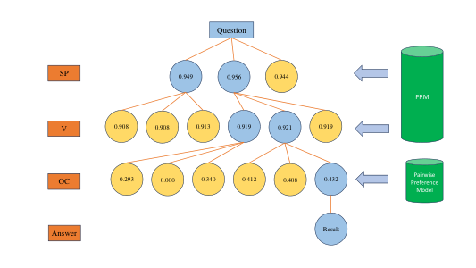

BPP-Search: Enhancing Tree of Thought Reasoning for Mathematical Modeling Problem Solving
BPP-Search guides tree-of-thought modeling with process rewards, beam search, and pairwise preference ranking.

A BPP-Search example with beam width two. The process reward model prunes branches during search, and pairwise preference ranks the final candidates.
01 / Research question
How can a model search through alternative formulation steps and select a reliable final optimization model without exploring every branch?
02 / Approach
The reasoning tree decomposes a problem into a sequence of question, sets, parameters, variables, objective, and constraints. A process reward model scores intermediate nodes and beam search retains promising branches. Because process scores may not reliably separate similar final candidates, BPP-Search applies a pairwise preference model to compare the remaining solutions and rank the final candidate. The paper also introduces StructuredOR, a dataset with explicit labels for the full modeling process.
03 / Research scope
StructuredOR contains 124 concrete optimization questions across domains including logistics, scheduling, and networks. In the reported search comparison, GPT-4o is evaluated on 30 solvable StructuredOR problems, 72 MAMO-ComplexLP problems, and 143 NL4OPT problems. The authors also compare different search configurations and report both correct-solution rates and reasoning steps.
Experimental results
Search accuracy and reasoning cost
| Method | StructuredOR · accuracy (%) | MAMO-ComplexLP · accuracy (%) | NL4OPT · accuracy (%) | StructuredOR · steps | MAMO-ComplexLP · steps | NL4OPT · steps |
|---|---|---|---|---|---|---|
| Chain-of-Thought | 63.3 | 48.6 | 56.6 | 1.0 | 1.0 | 1.0 |
| Self-Consistency | 70.0 | 62.5 | 71.3 | 4.0 | 4.0 | 4.0 |
| Tree-of-Thought · random | 70.0 | 44.4 | 62.9 | 39.0 | 39.0 | 39.0 |
| Tree-of-Thought · rethink | 76.6 | 58.3 | 62.2 | 40.0 | 40.0 | 40.0 |
| Greedy Search | 83.3 | 55.5 | 71.3 | 9.0 | 9.0 | 9.0 |
| Beam Search | 80.0 | 66.6 | 78.3 | 15.0 | 21.0 | 15.0 |
| BPP-Search | 93.3 | 72.2 | 80.4 | 15.0 | 21.0 | 15.0 |
Rates are calculated from the paper’s proportions. The evaluated subsets were confirmed solvable by GPT-4o; the denominators were 30, 72, and 143 respectively.
BPP-Search achieves the highest correct-solution rate among these methods on all three evaluated datasets. On StructuredOR, it reaches 93.3% using 15 reasoning steps, compared with 70.0% for fully traversed Tree-of-Thought using 39 steps.
Search configuration ablation
| Method | StructuredOR | MAMO-ComplexLP | NL4OPT |
|---|---|---|---|
| Greedy Search + PRM | 73.3 | 55.5 | 69.9 |
| Random Greedy Search + PRM | 83.3 | 51.3 | 69.2 |
| Epsilon Greedy Search + PRM | 73.3 | 50.0 | 71.3 |
| Beam Search (width 2) + PRM | 80.0 | 65.2 | 78.3 |
| Beam Search (width 3) + PRM | 76.6 | 66.6 | 75.5 |
| BPP-Search (width 2) | 93.3 | 65.2 | 80.4 |
| BPP-Search (width 3) | 86.6 | 72.2 | 79.7 |
PRM means process reward model. BPP-Search adds pairwise preference ranking to the final candidate selection.
The preference model helps address cases where the process reward model assigns similar scores to subtly different final candidates. A larger beam does not improve every dataset, so search width remains a trade-off.
Citation
@inproceedings{bppsearch2025,
title = {BPP-Search: Enhancing Tree of Thought Reasoning for Mathematical Modeling Problem Solving},
author = {Teng Wang and Wing Yin Yu and Zhenqi He and Zehua Liu and Hailei Gong and Han Wu and Xiongwei Han and Wei Shi and Ruifeng She and Fangzhou Zhu and Tao Zhong},
booktitle = {ACL},
year = {2025},
url = {https://aclanthology.org/2025.acl-long.40/}
}